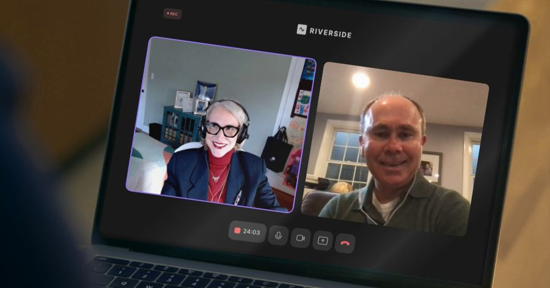
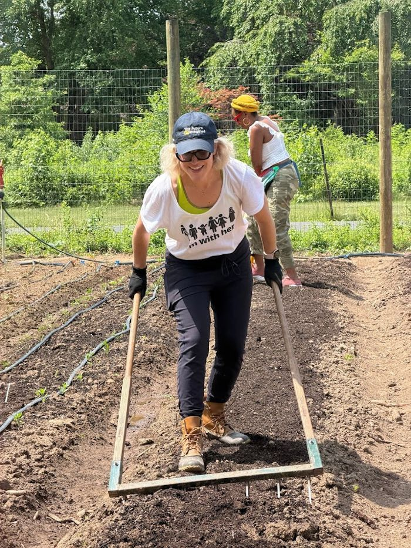

LauraSegafredo
Researcher, investor, advisor, and educator. Lifelong student. Lover of beauty. Aspiring farmer.
My work spans finance, ecology, ethics, and political economy, from building businesses and advising organizations to teaching, writing, and hosting conversations. What connects these pursuits is a question: how can economic and financial systems better serve human and more-than-human flourishing, ecological resilience, and the common good?
Teaching & Research
Academic inquiry and teaching on sustainable finance, ecological economics, ethics and institutional change.
Teaching and research → Sistematica · Universe Partners · All About WaterFinance & Climate
Advisory, investment, and research work on sustainable and values-aligned finance, with an eye for long-term value.
Advisory, fund and boards → Substack · PodcastMoral Revolution
Essays and conversations on the moral imagination needed for a more just and sustainable economy.
Read and listen → Farminary · Oikos LabLand & Regeneration
Learning from soil, seasons, and the work of growing food, and exploring how land-based education can help us rethink value, community, and economic life.
From the field → Talks · Interviews · WorkshopsPublic Work
Talks, interviews, workshops, and collaborations for audiences working across finance, policy, academia, and civil society.
Speaking and contact →MoralRevolution

Writing & podcast · with Tony AnnettA writing and conversation project that brings theology, ethics, political economy, ecology, and social justice into conversation, as shared resources for imagining a more just world in which humanity and the rest of creation can flourish.

What the soil teaches
Alongside my work in finance, history, theology and the economy, I am deepening my understanding of regenerative farming and the relationships among land, food, community, and economic life, through my work and learning at Princeton Theological Seminary’s Farminary.
Connecting land-based learning, ecological care, and new approaches to economic life.